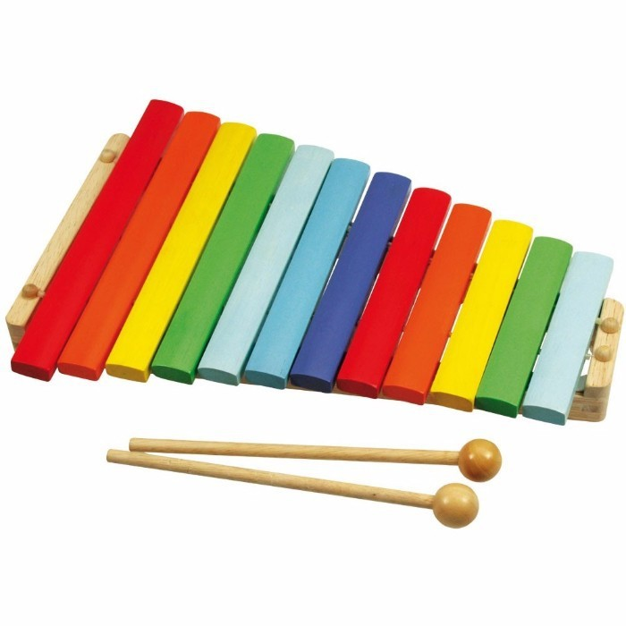

Xilofon
Rovid tortenelem:
Az asztali harangjátékra emlékeztet a xilofon skálájának beosztása, de különböző hosszúságú, hangolt lemezei acél helyett keményfából készülnek. A két-három-négy sorban rendezett, sima vagy gömbölyded falemezek rendszerint fonott szalmakötegeken nyugszanak. A xilofont két ütővel szólaltatják meg. A játéktechnika tekintetében is hasonlít a harangjátékhoz, de sokkal mozgékonyabb annál: szárazon pattogó hangjai sebes iramban követhetik egymást anélkül, hogy összefolynának.
